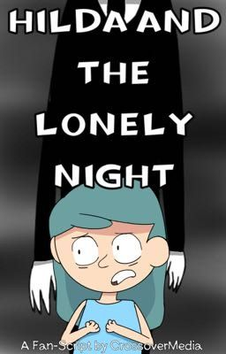
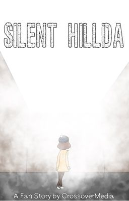
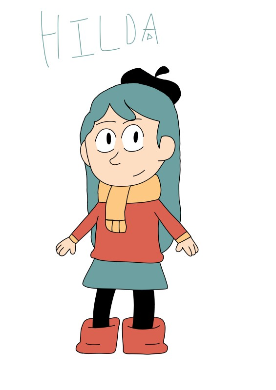
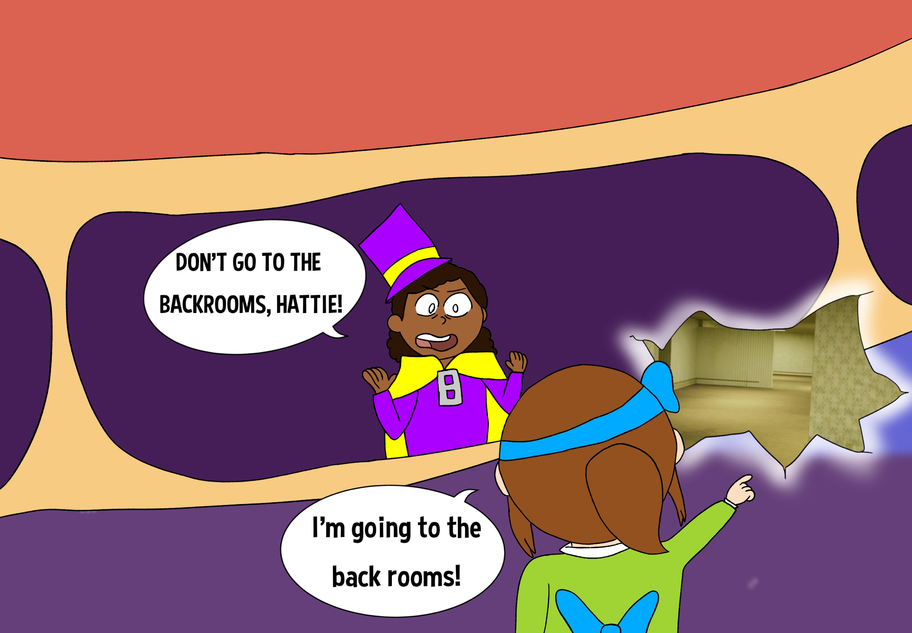
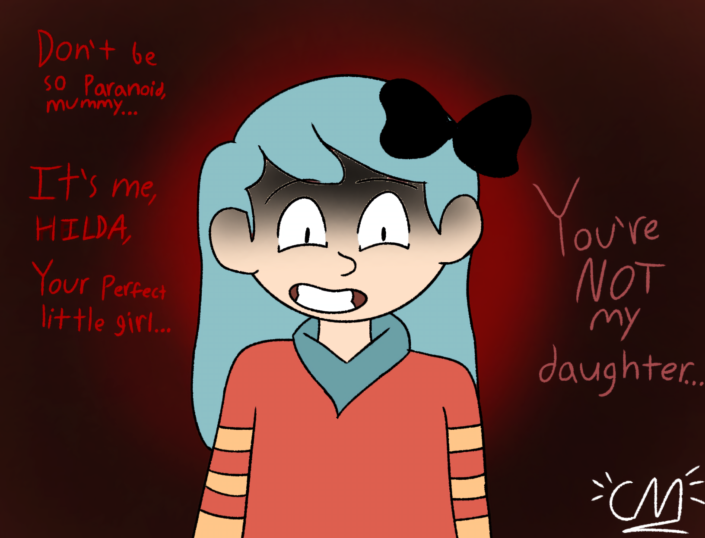
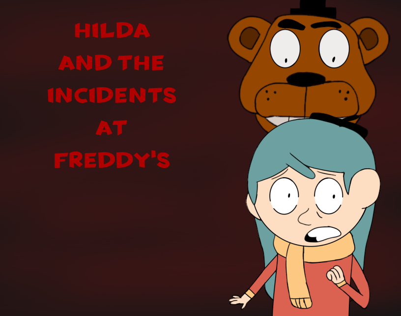

Select each image to view bigger
   
Despite it's cancellation, I still look back fondly on my short lived Slenderverse series, hoping to reboot it in the future, as I had a lot of fun making these edits.

© 2026, Adrian Acosta-Cotto